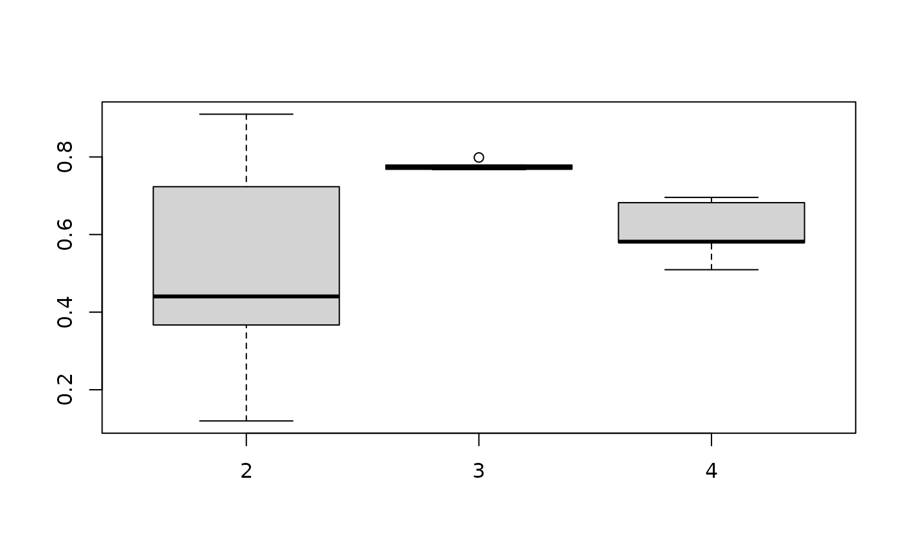

../vignettes/Intro2Flexord.Rmd
Intro2Flexord.RmdPackage flexord is an add on-package to packages flexclust and flexmix that provide suites for partitioning and model-based clustering with flexible method switching and comparison.
We provide additional distance and centroid calculation functions, and additional model drivers for component distributions that are tailored towards ordinal, or mixed-with-ordinal data. These new methods can easily be plugged into the capabilities for clustering provided by flexclust and flexmix.
By plugging them into the flex-scheme, they can be used for:
flexclust::kcca and flexmix::flexmix),k
(via flexclust::stepFlexclust and
flexmix::stepFlexmix),k for K-centroids clustering (via
flexclust::bootFlexclust),predict, plot, barchart, …| Clustering Type | Function Type | Function Name | Method | Scale Assumptions | NA Handling | Source |
|---|---|---|---|---|---|---|
| Partitioning (K-centroids) | distance |
distSimMatch
|
Simple Matching Distance | nominal | not implemented | Kaufman and Rousseeuw (1990), p. 19 |
distGDM2
|
GDM2 distance for ordinal data | ordinal | not implemented | Walesiak and Dudek (2010); Ernst et al. (2025) | ||
distGower
|
Gower’s distance | mixed-with-ordinal | upweighing of present variables | Kaufman and Rousseeuw (1990), p. 32-37 | ||
| centroid |
centMode
|
Mode as centroid | nominal | not implemented | Weihs et al. (2005); Leisch (2006) | |
centMin
|
Factor level with minimal distance as centroid | nominal/ordinal | not implemented | Ernst et al. (2025) | ||
centOptimNA
|
Centroid calculation by general purpose optimizer | numeric | complete-case analysis | Leisch (2006) | ||
| wrapper |
kccaExtendedFamily
|
Creates a kccaFamily object pre-configured for kModes-,
kGDM2- or kGower clustering
|
||||
| Model-based | driver |
FLXMCregnorm
|
Regularized multivariate normal distribution | numeric | not implemented | Fraley and Raftery (2007); Ernst et al. (2025) |
FLXMCregmultinom
|
Regularized multivariate multinomial distribution | nominal | not implemented | Galindo Garre and Vermunt (2006); Ernst et al. (2025) | ||
FLXMCregbinom
|
Regularized multivariate binomial distribution | ordinal | not implemented | Ernst et al. (2025) | ||
FLXMCbetabinomial
|
Regularized multivariate beta-binomial distribution | ordinal | not implemented | Kondofersky (2008); Ernst et al. (2025) |
We load necessary packages and set a random seed for reproducibility.
As an example for purely nominal data, we will use the classic
Titanic data set:
titanic_df <- data.frame(Titanic)
titanic_df <- titanic_df[rep(1:nrow(titanic_df), titanic_df$Freq), -5]
str(titanic_df)
#> 'data.frame': 2201 obs. of 4 variables:
#> $ Class : Factor w/ 4 levels "1st","2nd","3rd",..: 3 3 3 3 3 3 3 3 3 3 ...
#> $ Sex : Factor w/ 2 levels "Male","Female": 1 1 1 1 1 1 1 1 1 1 ...
#> $ Age : Factor w/ 2 levels "Child","Adult": 1 1 1 1 1 1 1 1 1 1 ...
#> $ Survived: Factor w/ 2 levels "No","Yes": 1 1 1 1 1 1 1 1 1 1 ...We can conduct K-centroids clustering with the kModes algorithm directly on the data frame1:
kcca(titanic_df, k = 4, family = kccaExtendedFamily('kModes'))
#> kcca object of family 'kModes'
#>
#> call:
#> kcca(x = titanic_df, k = 4, family = kccaExtendedFamily("kModes"))
#>
#> cluster sizes:
#>
#> 1 2 3 4
#> 140 396 287 1378Let us assume that for some reason we are unhappy with the mode as a centroid, and rather want to use an optimized centroid value, by choosing the factor level for which Simple Matching distance2 is minimal:
kcca(titanic_df, k = 4,
family = kccaFamily(dist = distSimMatch,
cent = \(y) centMin(y, dist = distSimMatch,
xrange = 'columnwise')))
#> kcca object of family 'distSimMatch'
#>
#> call:
#> kcca(x = titanic_df, k = 4, family = kccaFamily(dist = distSimMatch,
#> cent = function(y) centMin(y, dist = distSimMatch, xrange = "columnwise")))
#>
#> cluster sizes:
#>
#> 1 2 3 4
#> 369 737 317 778This already showcases one of the advantages of package flexclust: As the name suggests, we are quickly able to mix and match our distance and centroid functions, and quickly create our own K-centroids algorithms.
Furthermore, flexclust allows us to decrease the
influence of randomness via running the algorithm several times, and
keeping only the solution with the minimum within cluster distance. This
can be done for one specific number of clusters k or
several values k:
titanic_dm <- data.matrix(titanic_df)
stepFlexclust(titanic_dm, k = 2:4, nrep = 3,
family = kccaExtendedFamily('kModes'))
#> 2 : * * *
#> 3 : * * *
#> 4 : * * *
#> stepFlexclust object of family 'kModes'
#>
#> call:
#> stepFlexclust(x = titanic_dm, k = 2:4, nrep = 3, family = kccaExtendedFamily("kModes"))
#>
#> iter converged distsum
#> 1 NA NA 651.50
#> 2 200 FALSE 413.50
#> 3 200 FALSE 278.75
#> 4 200 FALSE 246.00The output above shows the solutions with lowest within cluster distance out of 3 runs for 2 to 4 clusters, in comparison to 1 big cluster. However, none of the algorithms converged. Presumably this is due to observations which have the same distance to two centroids and which are randomly assigned to one of the two centroids, implying that the partitions are still changing in each iteration, even if the centroids do not change.
Selecting a suitable number of clusters based on the output of
stepFlexclust might be still difficult. This is where
bootFlexclust comes in. In bootFlexclust,
nboot bootstrap samples of the original data are drawn, on
which stepFlexclust is performed for each k.
This results in k\(\times\)nboot best out of
nrep clustering solutions obtained for each bootstrap data
set. Based on these solutions cluster memberships are predicted for the
original data set, and the stability of these partitions is tested via
the Adjusted Rand Index (Hubert and Arabie
1985):
(nom <- bootFlexclust(titanic_dm, k = 2:4, nrep = 3, nboot = 5,
family = kccaExtendedFamily('kModes')))
#> An object of class 'bootFlexclust'
#>
#> Call:
#> bootFlexclust(x = titanic_dm, k = 2:4, nboot = 5, nrep = 3, family = kccaExtendedFamily("kModes"))
#>
#> Number of bootstrap pairs: 5Note that ridiculously few repetitions are used for the sake of
having a short run time. Clearly nboot should be increased
in applications.
The resulting ARIs can be quickly visualized via a predefined plotting method:
plot(nom)
Our plot indicates that out of the 2 to 4 cluster solutions, a three cluster solution has the highest median ARI out of 5 runs.
Now, after deciding on a suitable number of clusters, we could select
the corresponding cluster solution from kcca or
stepFlexclust, and make use of the further visualization,
prediction, and other tools. For this, we refer to the documentation
available in Leisch (2006) and Dolnicar, Grün, and Leisch (2018).
We also offer an algorithm specifically designed for model-based
clustering of unordered categorical data via a regularized multinomial
distribution. The multinomial driver also supports varying number of
categories between variables. We call flexmix using the
model driver FLXMCregmultinom() where we specify via the
argument r the number of categories for each variable:
titanic_ncats <- apply(titanic_dm, 2, max)
flexmix(formula = titanic_dm ~ 1, k = 3,
model = FLXMCregmultinom(r = titanic_ncats))
#>
#> Call:
#> flexmix(formula = titanic_dm ~ 1, k = 3, model = FLXMCregmultinom(r = titanic_ncats))
#>
#> Cluster sizes:
#> 1 2 3
#> 1208 364 629
#>
#> convergence after 125 iterationsAs we are estimating many category probabilities across multiple clusters, some of those may become numerically zero, resulting in a degenerate distribution. To avoid this we may use the regularization parameter \(\alpha\), which acts if we added \(\alpha\) observations according to the population mean to each component:
flexmix(titanic_dm ~ 1, k = 3,
model = FLXMCregmultinom(r = titanic_ncats, alpha = 1))
#>
#> Call:
#> flexmix(formula = titanic_dm ~ 1, k = 3, model = FLXMCregmultinom(r = titanic_ncats,
#> alpha = 1))
#>
#> Cluster sizes:
#> 1 2 3
#> 364 629 1208
#>
#> convergence after 56 iterationsflexmix also provides function
stepFlexmix(), where the EM algorithm for each
k is restarted nrep times, and only the
maximum likelihood solution is retained:
(nom <- stepFlexmix(titanic_dm ~ 1, k = 2:4,
nrep = 3, # please increase for real-life use
model = FLXMCregmultinom(r = titanic_ncats)))
#> 2 : * * *
#> 3 : * * *
#> 4 : * * *
#>
#> Call:
#> stepFlexmix(titanic_dm ~ 1, model = FLXMCregmultinom(r = titanic_ncats),
#> k = 2:4, nrep = 3)
#>
#> iter converged k k0 logLik AIC BIC ICL
#> 2 38 TRUE 2 2 -5327.340 10680.68 10754.74 10986.90
#> 3 103 TRUE 3 3 -5202.816 10445.63 10559.57 11036.09
#> 4 121 TRUE 4 4 -5176.038 10406.08 10559.89 11454.98The output provides an overview on the best solutions out of three EM
runs for 3 different values of k. For each solution, it is
indicated how many iterations of the EM algorithm were performed
(iter), if the EM algorithm converged
(converged), the number of components in the final solution
(k) and the number of components the EM algorithm was
initialized with (k0) as well as the maximum log-likelihood
(logLik) and results for different model selection
criteria, namely, AIC, BIC and ICL.
Similar to package flexclust in the partitioning case, package flexmix also offers various plotting methods for the returned objects. We just showcase here one:
plot(nom)For more information on the further methods and utilities offered,
check out the documentation for flexmix (see for
example browseVignettes('flexmix')).
Our next example data set is from a survey conducted among 563 Australians in 2015 where they indicated on a scale from 1-5 how inclined they are to take 6 types of risks. It consists of purely ordinal variables without missing values, and the response level length is the same for all variables. We load the data set and inspect it:
data("risk", package = "flexord")
str(risk)
#> int [1:563, 1:6] 3 1 2 1 5 5 1 5 1 3 ...
#> - attr(*, "dimnames")=List of 2
#> ..$ : NULL
#> ..$ : chr [1:6] "Recreational" "Health" "Career" "Financial" ...
colnames(risk)
#> [1] "Recreational" "Health" "Career" "Financial" "Safety"
#> [6] "Social"In our package, we offer two partitioning methods designed for ordinal data based on either Gower’s distance or GDM2 distance.
Applying Gower’s distance as implemented in distGower to
purely ordinal data corresponds to using Manhattan distance (as provided
also in flexclust::distManhattan) with previous scaling as
described by Kaufman and Rousseeuw (1990)
and Gower’s upweighing of non-missing values. The clustering can be
performed using:
kcca(risk, k = 3, family = kccaExtendedFamily('kGower'))
#> kcca object of family 'kGower'
#>
#> call:
#> kcca(x = risk, k = 3, family = kccaExtendedFamily("kGower"))
#>
#> cluster sizes:
#>
#> 1 2 3
#> 161 131 271The default centroid for this family is the general purpose optimizer
centOptimNA, which is the general purpose optimizer
flexclust::centOptim, just with NA removal. In our case of
purely ordinal data with no missing values, we could also choose the
median as a centroid:
kcca(risk, k = 3,
family = kccaExtendedFamily('kGower', cent = centMedian))
#> kcca object of family 'kGower'
#>
#> call:
#> kcca(x = risk, k = 3, family = kccaExtendedFamily("kGower", cent = centMedian))
#>
#> cluster sizes:
#>
#> 1 2 3
#> 303 160 100This results in kMedians with previous scaling, and non-missing value
upweighing. In our risk example with no NAs and equal
response level lengths for all variables,
flexclust::kccaFamily('kmedians') would suffice, but there
are still many data situations where the "kGower" approach
will be preferable.
As a second alternative designed specifically for ordinal data without missing values, we implement the GDM2 distance for ordinal data suggested by Walesiak and Dudek (2010), which conducts only relational operations on ordinal variables. We reformulated this distance for use in K-centroids clustering in Ernst et al. (2025), and implemented it in the package such that one can use it for clustering via:
kcca(risk, k = 3, family = kccaExtendedFamily('kGDM2'))
#> kcca object of family 'kGDM2'
#>
#> call:
#> kcca(x = risk, k = 3, family = kccaExtendedFamily("kGDM2"))
#>
#> cluster sizes:
#>
#> 1 2 3
#> 342 97 124Similar to "kGower", a default general optimizer
centroid is applied, which we could replace as desired.
Another parameter used in both "kGower" and
"kGDM2" is xrange. Both algorithms require
information on the range of the variables of the data object for data
pre-processing: "kGower" uses this for scaling, while
"kGDM2" for transforming the data to empirical
distributions. The range calculation can be influenced in the following
ways: We can use the range of the whole x (argument
all, the default for "kGDM2"), columnwise
ranges (xrange = "columnwise"), a vector specifying the
range across all variables in the data set, or a list of length
ncol(x) with range vectors for each column. Let us assume
that the highest possible response to the risk questions
was Extremely often (6), but it was never chosen by any of
the respondents. We can take the new assumed full range of the data into
account:
kcca(risk, k = 3,
family = kccaExtendedFamily('kGDM2', xrange = c(1, 6)))
#> kcca object of family 'kGDM2'
#>
#> call:
#> kcca(x = risk, k = 3, family = kccaExtendedFamily("kGDM2", xrange = c(1,
#> 6)))
#>
#> cluster sizes:
#>
#> 1 2 3
#> 117 97 349Again, the distances, centroids, and wrapper alternatives presented can be used also in the further capabilities of flexclust.
We also offer model drivers for two component distributions suitable for ordinal data, which are the binomial distribution and its extension the beta-binomial distribution:
risk1 <- risk - 1
flexmix(risk1 ~ 1, k = 3, model = FLXMCregbinom(size = 4))
#>
#> Call:
#> flexmix(formula = risk1 ~ 1, k = 3, model = FLXMCregbinom(size = 4))
#>
#> Cluster sizes:
#> 1 2 3
#> 43 401 119
#>
#> convergence after 69 iterations
flexmix(risk1 ~ 1, k = 3, model = FLXMCregbetabinom(size = 4, alpha = 1))
#>
#> Call:
#> flexmix(formula = risk1 ~ 1, k = 3, model = FLXMCregbetabinom(size = 4,
#> alpha = 1))
#>
#> Cluster sizes:
#> 1 2 3
#> 49 108 406
#>
#> convergence after 89 iterationsIn both cases we specify the number of trials of the binomial
distribution (size). For both distributions we can also use
a regularization parameter alpha that shrinkgs the
component estimates towards the population mean. While this incurs small
distortions it can be helpful to avoid boundary estimates.
The beta-binomial distribution is parameterized by two parameters
a and b and is therefore more flexible than
the binomial. It may potentially perform better in more difficult
clustering scenarios even if we assume the original data was drawn from
a binomial mixture (Ernst et al. 2025).
Your mileage may vary.
We can further use the capabilities of stepFlexmix and
the corresponding plot functions.
Treating ordered categorical data as unordered is a frequent
approach. In fact, in our simulation study it was a quite competitive
approach for model-based methods. However, applying kmodes
to ordered data brought subpar results in the partitioning ambit (Ernst et al. 2025).
Also treating ordered categorical data as integer values is at least
as common as nominalization. In fact, some of the methods presented
above, such as "kGower" - as used above on purely ordinal
data without missing values - make only lax concessions towards
ordinality. Depending on data characteristics and specific method
applied, this approach may also be a very good choice (Ernst et al. 2025).
We do not offer any new methods for this in the partitioning ambit,
as already many options are available in flexclust. In
the model-based ambit we offer additional capabilities via
FLXMCregnorm, which, as mentioned, is a driver for
clustering with multivariate normal distributions (assuming conditional
independence) while allowing for regularization (as in the case for
FLXMCregmultinom to help avoid degenerate solutions). One
can proceed as follows to use the data-driven default regularization
parameters as proposed by Fraley and Raftery
(2007):
params <- FLXMCregnorm_defaults(risk, kappa_p = 0.1, k = 3)
flexmix(risk ~ 1, k = 3, model = FLXMCregnorm(params = params))
#>
#> Call:
#> flexmix(formula = risk ~ 1, k = 3, model = FLXMCregnorm(params = params))
#>
#> Cluster sizes:
#> 1 2
#> 58 505
#>
#> convergence after 51 iterationsFor details on the parameters used for regularization, see Fraley and Raftery (2007) or package
mclust. Here, we would only like to point out that the
shrinkage parameter kappa_p (the suffix _p
stands for prior), acts as if we added kappa_p observations
according to the population mean to each component. Using
FLXMCregnorm_defaults with the data and the number of
components determines the scale parameter zeta_p by
dividing the empirical variance by the square of the number of
components. Thus we need to pass the data and k = 3.
Alternatively, we could also specify a value for zeta_p and
then omit the parameter k. Note that we cannot set both
parameters at the same time and therefore, zeta_p takes
precedence if both are given.
Again, the model can be plugged into all of the further tools offered by flexmix.
data("vacmot", package = "flexclust")
vacmot2 <- cbind(vacmotdesc,
apply(vacmot, 2, as.logical))
vacmot2 <- vacmot2[, c('Gender', 'Age', 'Income2', 'Relationship.Status', 'Vacation.Behaviour',
sample(colnames(vacmot), 3, replace = FALSE))]
vacmot2$Income2 <- as.ordered(vacmot2$Income2)
str(vacmot2)
#> 'data.frame': 1000 obs. of 8 variables:
#> $ Gender : Factor w/ 2 levels "Male","Female": 2 2 1 2 1 2 1 1 2 2 ...
#> $ Age : num 25 31 21 18 61 63 58 41 36 56 ...
#> $ Income2 : Ord.factor w/ 5 levels "<30k"<"30-60k"<..: 2 5 4 2 1 2 1 2 4 2 ...
#> $ Relationship.Status : Factor w/ 5 levels "single","married",..: 1 2 1 1 2 2 3 4 3 2 ...
#> $ Vacation.Behaviour : num 2.07 2 1.23 2.17 1.72 ...
#> $ realise creativity : logi FALSE FALSE FALSE FALSE FALSE FALSE ...
#> $ rest and relax : logi TRUE TRUE TRUE TRUE TRUE TRUE ...
#> $ entertainment facilities: logi FALSE FALSE FALSE TRUE FALSE FALSE ...
colMeans(is.na(vacmot2))*100
#> Gender Age Income2
#> 0.0 0.0 6.6
#> Relationship.Status Vacation.Behaviour realise creativity
#> 0.4 2.5 0.0
#> rest and relax entertainment facilities
#> 0.0 0.0For our last example, we use a data set which is obtained by merging
two data sets shared in package flexclust.
flexclust provides object vacmot
consisting of a \(1000 \times 20\)
matrix of binary responses to questions on travel motives asked
Australian tourists in 2006, plus a separate data frame
vacmotdesc with 12 demographic variables for each
respondent.
This data set has been thoroughly explored using clustering methods
in the field of market segmentation research, see for example Dolnicar and Leisch (2008). We now use it as a
data example for a mixed-data case with a moderate amount of
missingness. For this, we select one symmetric binary variable (Gender,
which was collected as Male/Female in 2006), two numeric variables (Age
and Vacation Behaviour3), one unordered categorical variable
(Relationship Status), one ordered categorical variable (Income2, which
is a recoding of Income), and three randomly selected
asymmetric binary variables (3 of the 20 questions on whether a specific
travel motive applies to a respondent). Missing values are present, but
the percentage is low4.
Currently, we only offer one method for mixed-type data with missing
values, which is "kGower" (scaling and distances as
proposed by Gower (1971) and Kaufman and Rousseeuw (1990), and a general
purpose optimizer centroid as provided in flexclust,
but with NA omission):
kcca(vacmot2, k = 3, family = kccaExtendedFamily('kGower'))
#> kcca object of family 'kGower'
#>
#> call:
#> kcca(x = vacmot2, k = 3, family = kccaExtendedFamily("kGower"))
#>
#> cluster sizes:
#>
#> 1 2 3
#> 535 92 373In our example above, the default methods for each variable type are used (Simple Matching Distance for the categorical variables, squared Euclidean distance for the numerical/integer variables, Manhattan distance for ordinal variables, and Jaccard distance for logical variables).
We could instead provide a vector of length
ncol(vacmot2) where each distance measure to be used is
specified. Let us assume that we have many outliers in the variable
Age, that we woud like to consider
Vacation.Behaviour an ordered factor as well in addition to
Income2, and that the three binary responses to vacation
motives should be treated symmetric instead of asymmetric5, and for this reason
want to evaluate the first three with Manhattan distance, and the latter
three with Euclidean distance6:
colnames(vacmot2)
#> [1] "Gender" "Age"
#> [3] "Income2" "Relationship.Status"
#> [5] "Vacation.Behaviour" "realise creativity"
#> [7] "rest and relax" "entertainment facilities"
xmthds <- c('distSimMatch', rep('distManhattan', 3),
'distSimMatch', rep('distEuclidean', 3))
kcca(vacmot2, k = 3,
family = kccaExtendedFamily('kGower', xmethods = xmthds))
#> kcca object of family 'kGower'
#>
#> call:
#> kcca(x = vacmot2, k = 3, family = kccaExtendedFamily("kGower",
#> xmethods = xmthds))
#>
#> cluster sizes:
#>
#> 1 2
#> 488 512For "kGower", all numeric/integer and ordered variables
are scaled as proposed by Kaufman and Rousseeuw
(1990), by shifting by the minimum and dividing by the range.
This means that also for "kGower", the range of the
variables will influence the clustering results. Same as for
"kGDM2" (Example 2), we can specify the
range to be used in parameter xrange. In the case of
"kGower", the default value is "columnwise",
where the range for each column is calculated separately.
Again, the distance, centroid and wrapper functions can be used in the further tools provided by flexclust, for examples on that see Example 1.
Internally, it will be converted to a
data.matrix. However, as only equality operations and
frequency counts are used, this is of no consequence.↩︎
I.e., the mean disagreement count.↩︎
Mean environmental friendly behavior score, ranging from 1 to 5.↩︎
This is by choice. While Gower’s distance is designed to handle missingness via variable weighting, and the general optimizer used here is written to omit NAs, both methods will degenerate with high percentages of missing values. While we have not yet determined the critical limit, we have successfully run the algorithm on purely ordinal data with MCAR missingness percentages of up to 30%. However, common sense dictates that solutions obtained for such high missingness percentages need to be treated with caution.↩︎
Meaning that 2 disagreements are just as important as 2 agreements.↩︎
We could achieve symmetric treatment also via Simple Matching Distance.↩︎